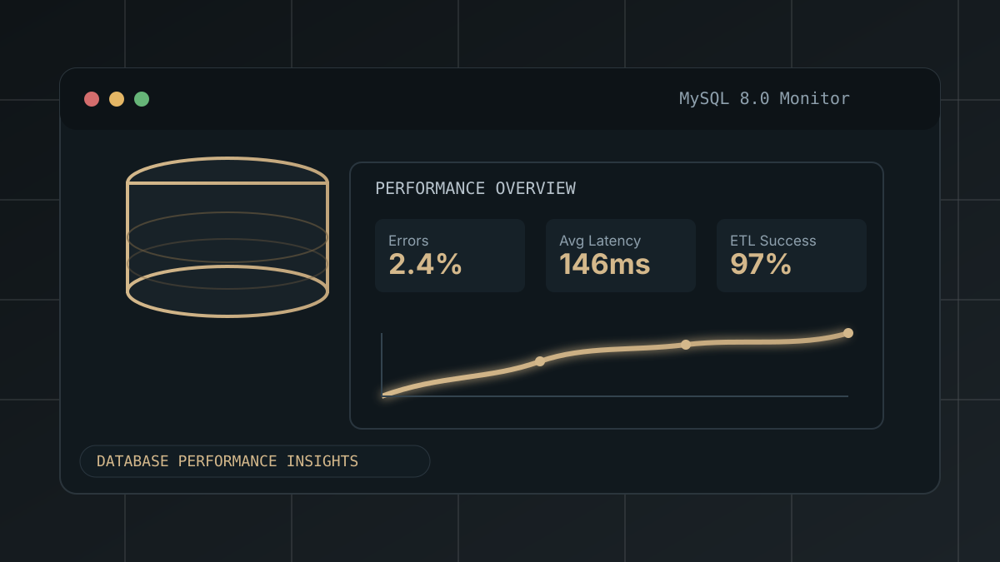

Hi, I'm Karthick Raja
|
I'm a Computer Science student from Chennai who loves working with data. I build ML models, dashboards, and AI tools using Python.
I'm a Computer Science student from Chennai who loves working with data. I build ML models, dashboards, and AI tools using Python.
I love working with data and building things that are actually useful.
I'm a final-year Computer Science student at Hindusthan Institute of Technology. I enjoy turning raw data into clear results — whether it's a model, a chart, or an app.
I've worked on projects like a bird sound classifier and a stock market dashboard. I like learning new things and solving real problems with data.
Tools and technologies I use regularly.
Click on a project to see more details.

A comprehensive portfolio analysis dashboard built entirely in Microsoft Excel — designed to help investors track performance, visualize trends, and make data-backed decisions without specialized software.

An end-to-end AI system that identifies bird species from audio recordings. Audio is converted into spectrograms and classified using a Convolutional Neural Network, deployed as an interactive Streamlit app.

A production-style SQL monitoring project for system logs with schema design, alerting rules, and a curated analytics query catalog. Built to track database health, identify issues early, and support data-driven operations.
From school to engineering college — my learning journey so far.
Have a project or job opportunity? Feel free to reach out. I'd love to hear from you.
I'm a final-year student looking for opportunities in Data Science and Machine Learning. Let's talk!
Send a Message